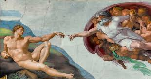
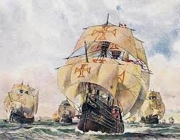
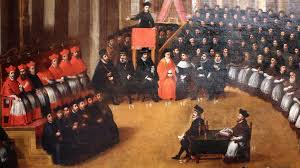
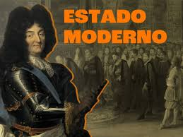
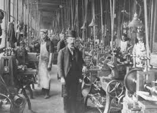

- Renascimento cultural e científico
- Grandes Navegações
- Reforma e Contrarreforma
- Formação dos Estados modernos
- Absolutismo e Iluminismo
- Revolução Industrial (início)
Renascimento foi um movimento artístico, cultural e científico que surgiu na Itália por volta do século XIV e se espalhou pela Europa, marcando a transição da Idade Média para a Idade Moderna. Caracterizado pela retomada dos valores da antiguidade greco-romana e pelo desenvolvimento do pensamento humanista, antropocêntrico e racional, o Renascimento valorizou a razão e a experiência empírica em detrimento da fé, impulsionando descobertas científicas como a heliocêntrica e a criação de um método científico moderno.
As Grandes Navegações foram um período de intensas explorações marítimas entre os séculos XV e XVI, impulsionadas pela busca por novas rotas comerciais, especiarias e riquezas, levando à descoberta de novos continentes e ao contato entre diferentes civilizações. Portugal e Espanha foram os principais protagonistas, com Portugal sendo o pioneiro ao alcançar a Índia via África (Vasco da Gama) e a Espanha descobrindo a América (Cristóvão Colombo). A era foi possível graças ao avanço de tecnologias de navegação, como a caravela e a bússola, e culminou em marcos como a primeira circum-navegação, liderada por Fernão de Magalhães e concluída por Sebastião Elcano.
A Reforma foi o movimento do século XVI que dividiu a cristandade ocidental, com o surgimento de novas igrejas como a Luterana e a Calvinista, que questionavam dogmas católicos e a autoridade papal. A Contrarreforma (ou Reforma Católica) foi a reação da Igreja Católica a esse cisma, buscando reprimir o protestantismo, reformar as próprias instituições e revitalizar a fé por meio de medidas como o Concílio de Trento, a Companhia de Jesus e a reorganização da Inquisição.
A formação dos estados modernos europeus foi um longo processo de centralização do poder que ocorreu entre os séculos XIV e XVI, a partir do fim do feudalismo, resultando na criação de monarquias com poder centralizado e soberano, como Portugal, Espanha, França e Inglaterra. Esses novos estados caracterizaram-se pela delimitação de territórios, um exército nacional, moeda unificada, um conjunto de leis e um sistema de impostos centralizado, que permitiram a expansão do capitalismo mercantil e o surgimento da burguesia como classe influente.
Absolutismo e Iluminismo são conceitos históricos opostos, onde o Absolutismo defendia o poder absoluto do monarca, enquanto o Iluminismo criticava e buscava limitar esse poder através da razão, da divisão de poderes e dos direitos individuais. Os pensadores iluministas, influenciados pelo liberalismo, defendiam a liberdade, a igualdade, a descentralização do poder e a não interferência do Estado na economia, contrastando fortemente com as práticas absolutistas do Antigo Regime.
Absolutismo Definição: Forma de governo onde o monarca detinha poderes absolutos, sem restrições legais ou institucionais, concentrando as funções de criar, executar e julgar as leis. Características: Concentração de poder: O rei detinha controle total sobre o reino. Ausência de limites: Não existiam constituições ou outros órgãos para limitar a autoridade real. Sociedade estamental: Havia uma estrutura social rígida, com privilégios para a nobreza e o clero, sem mobilidade social.
Iluminismo Definição: Movimento intelectual e cultural que valorizava a razão e o pensamento crítico, surgido na Europa no século XVIII. Crítica ao Absolutismo: Limitação do poder: Defendiam a criação de leis e constituições para estabelecer limites ao poder real. Divisão de poderes: Propuseram a separação das funções executiva, legislativa e judiciária, como proposto por Montesquieu. Soberania popular: Acreditavam que o poder deveria emanar do povo, não da divindade ou da tradição.
A Revolução Industrial começou na Inglaterra por volta de 1760, estendendo-se até cerca de 1840, e foi um período de grandes inovações tecnológicas que levaram à transição da produção manual para a mecânica, impulsionada por máquinas a vapor e pelo uso de carvão e ferro. Esse processo foi impulsionado por fatores como a abundância de matérias-primas, a acumulação de capital, a mão de obra barata proveniente do campo e um ambiente político e econômico favorável, transformando as bases da sociedade e da economia.
